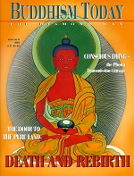

This issue is no longer in print.
Number 6 — 1999
Death and Rebirth
To Our Readers
A Meeting with Karmapa Thaye Dorje
The Door to the Pure Land
Lama Gendyn Rinpoche
The Bardo of Death and Rebirth
Lama Ole Nydahl
The Different Levels of Amitabha Practice
Manfred Seegers
Book Revievs
Matthias Weitbrecht
The Life of Milarepa, Part II
Brooke Webb
The Phowa Transmission Lineage
Detlev Gobel
Dodrup Chen Shows How to Die
Surya Das